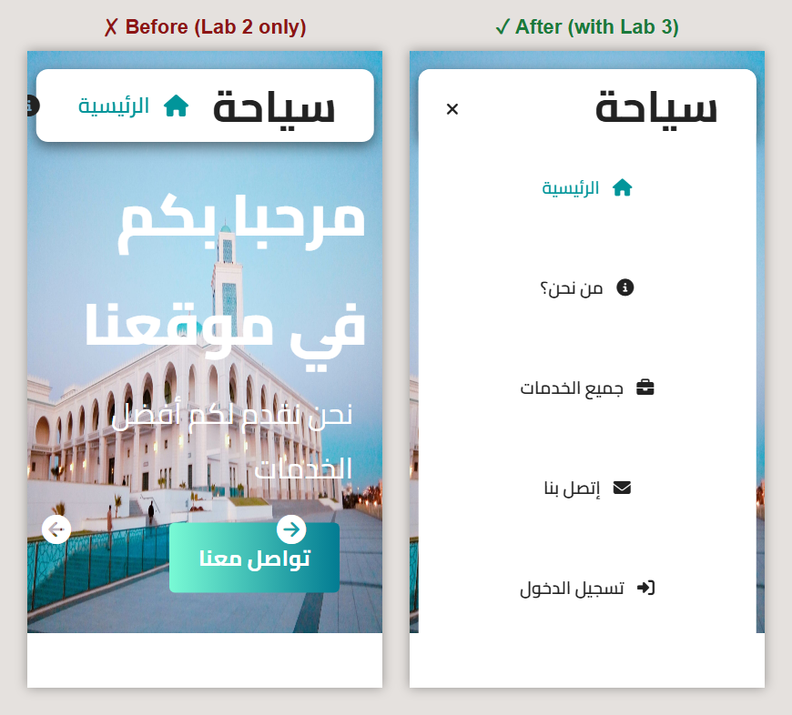
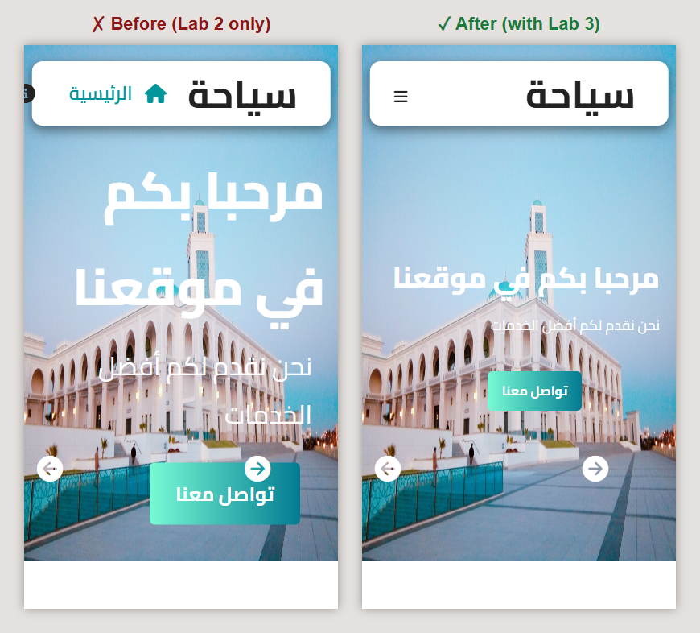
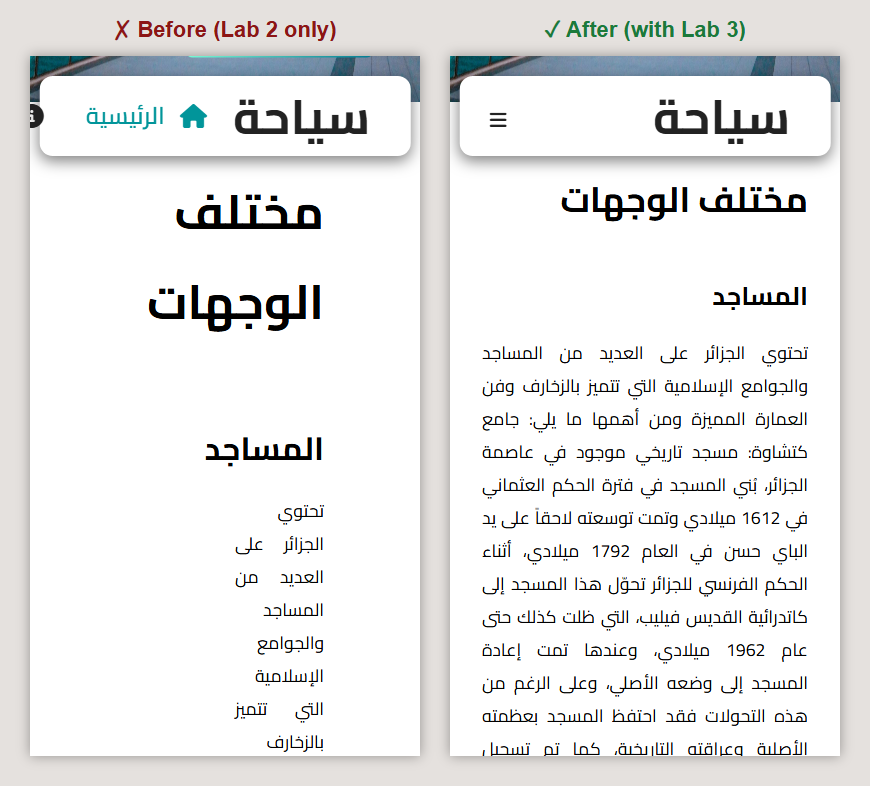
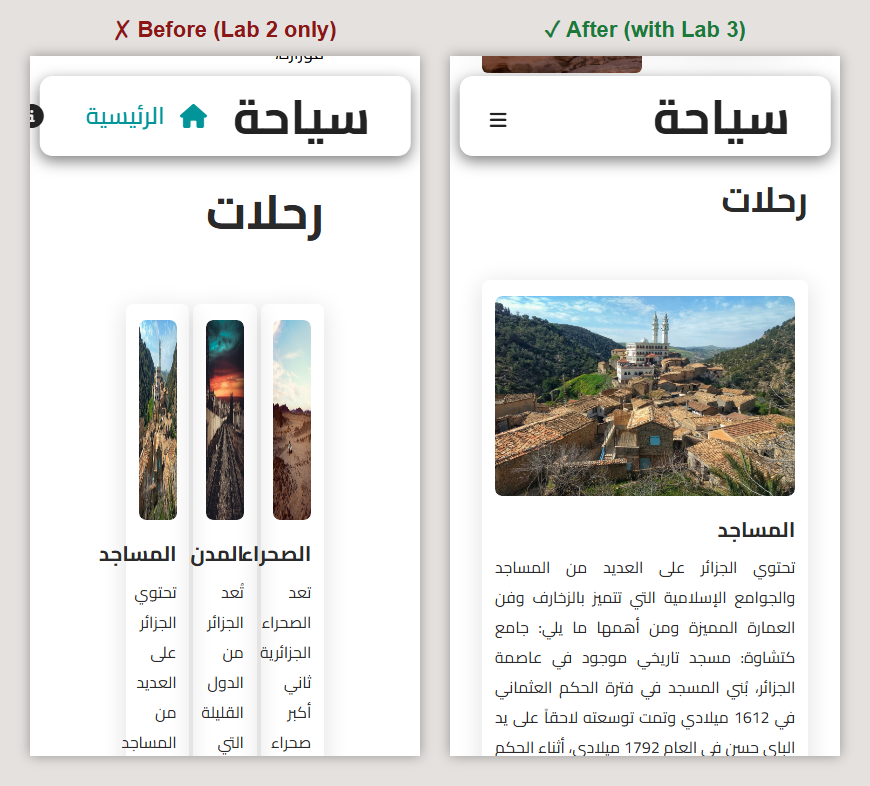
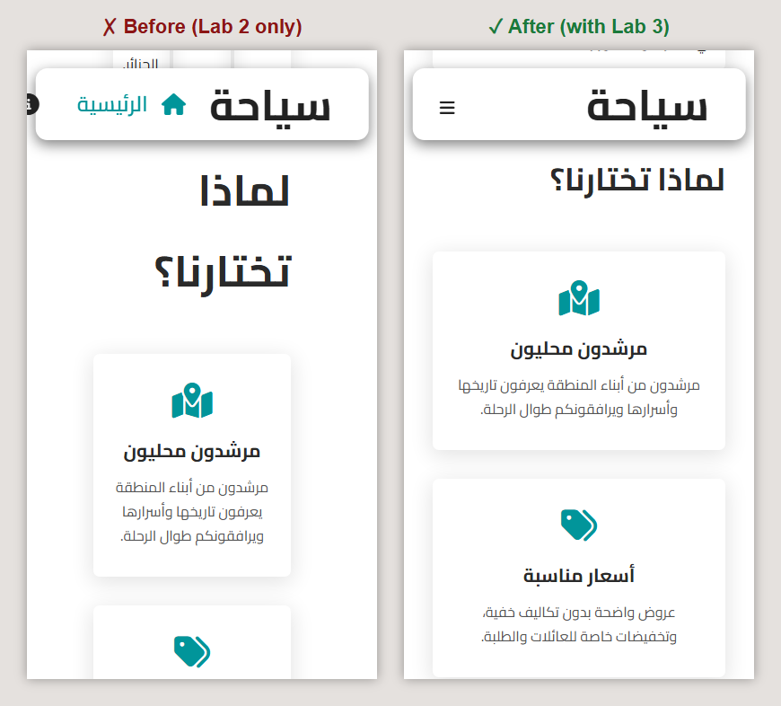
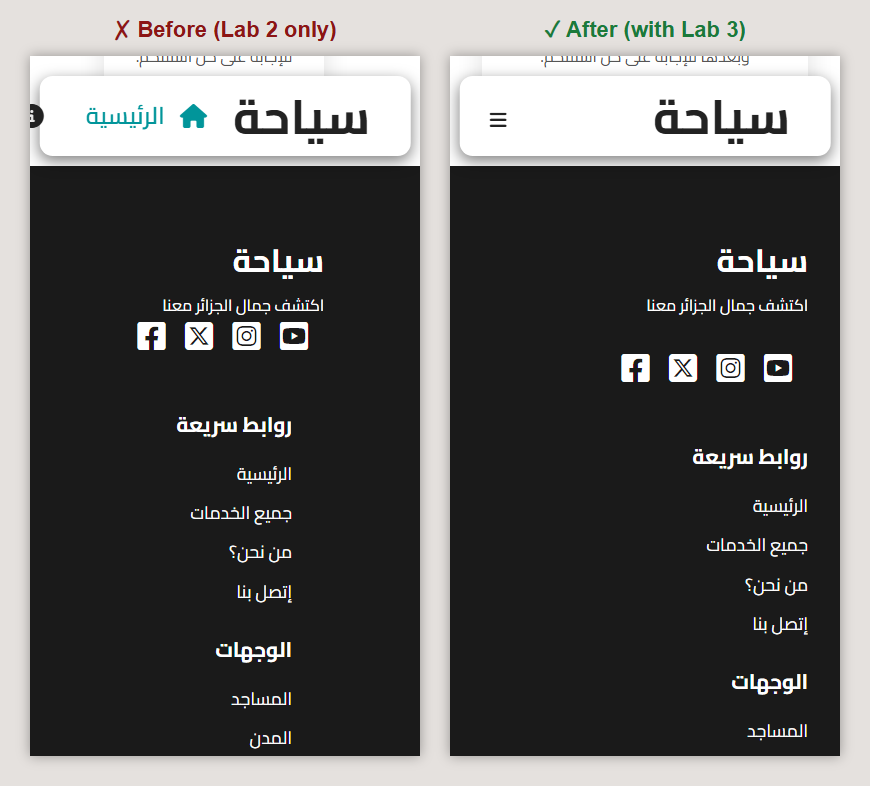
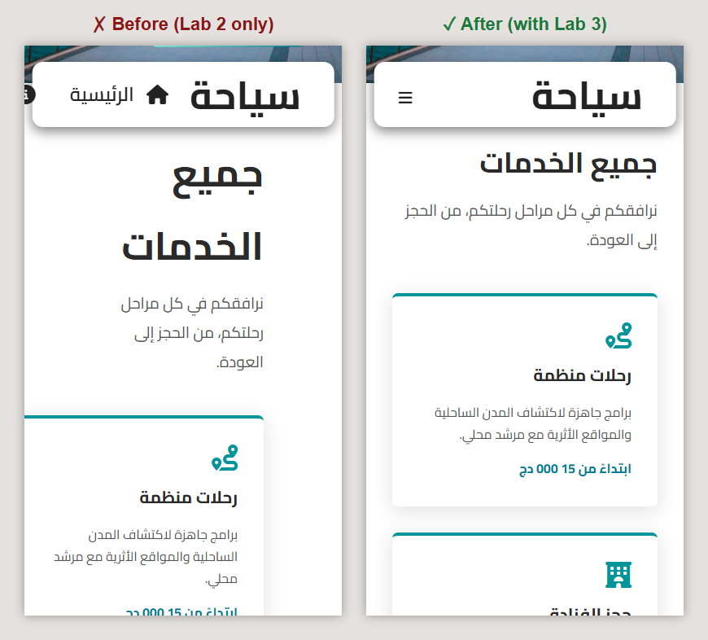
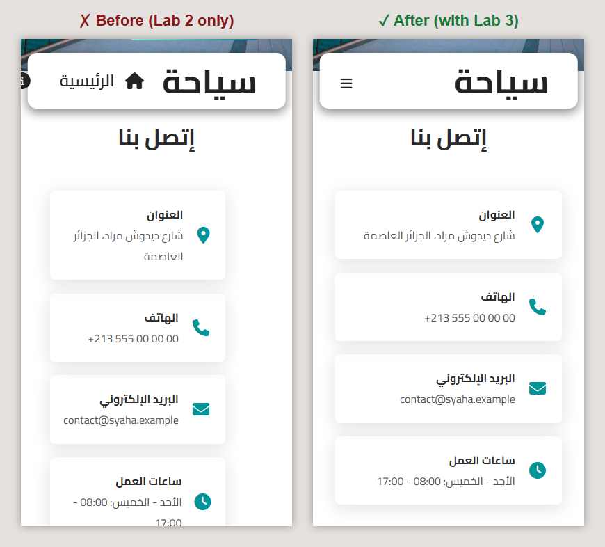
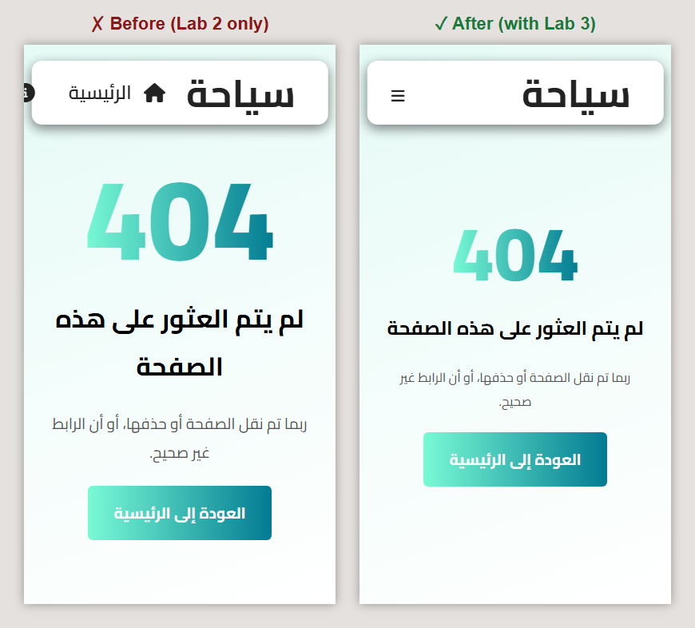
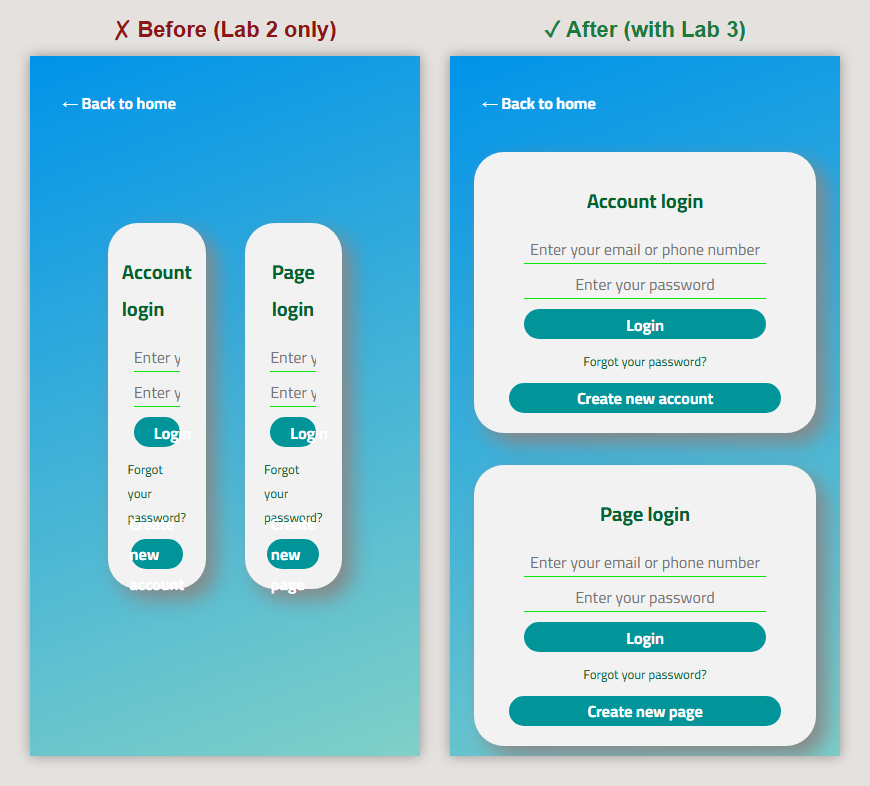

Lab 3: Responsive design (CSS part 2)
Instructions
In Lab 2 you built the desktop version of the Syaha website. Open it on a phone and almost everything breaks: the menu does not fit, titles cover the photos, cards become slivers. In this lab you make every component adapt to tablets and phones, one stylesheet per component, without touching the desktop styles. Then you do the same for your team project.
I. What responsive design is
- The viewport meta tag. Without it, phones pretend to be about 980px wide and shrink the whole page. Every page of Syaha already has it in its
<head>:
<meta name="viewport" content="width=device-width, initial-scale=1.0">
- Flexible sizes. Percentages,
vw/vh,rem, flexbox and grids let boxes stretch and shrink instead of having fixed pixel widths. - Media queries. Blocks of CSS that only apply when a condition is true, for example "the viewport is at most 850px wide".
/* desktop styles: no media query */
.Trip_Card {
width: 32%;
}
/* applied only when the viewport is 850px wide or less */
@media screen and (max-width: 850px) {
.Trip_Card {
width: 100%;
}
}
Inside the media query, the rule has the same selector as the desktop rule. Since it comes later in the cascade, it wins when the condition is true, and is ignored otherwise.
II. Breakpoints and strategy
| Media query | Devices | What changes |
|---|---|---|
(max-width: 850px) |
tablets, small laptops and phones | hamburger menu, items stacked in one column, smaller margins and titles |
(max-width: 555px) |
phones | even smaller texts, one column of links and cards |
Because the site was written for desktops first, we use max-width queries that override the desktop styles on smaller screens: this is the desktop-first approach. The opposite, mobile-first, writes the phone styles first and adds min-width queries for larger screens (see Section XII).
III. Organizing the responsive stylesheets
Following the rule of Lab 2 (one component, one stylesheet), each component gets a second stylesheet that contains only its media queries, named after it: Nav_Bar.css and Nav_Bar_Responsive.css, Hero.css and Hero_Responsive.css, and so on. In the demo they are in the folder SRC/Labs/Lab_3; in your project put them in assets/css. The order of the links matters: the responsive files come after the desktop files, otherwise the desktop rules would win again. Here is the <head> of the home page:
<link rel="stylesheet" href="assets/css/Nav_Bar.css">
<link rel="stylesheet" href="assets/css/Lab_2_Page.css">
<link rel="stylesheet" href="assets/css/Hero.css">
<link rel="stylesheet" href="assets/css/Slider.css">
<link rel="stylesheet" href="assets/css/Destination.css">
<link rel="stylesheet" href="assets/css/Trip.css">
<link rel="stylesheet" href="assets/css/Features.css">
<link rel="stylesheet" href="assets/css/Lab_2_Footer.css">
<!-- responsive design (Lab 3) -->
<link rel="stylesheet" href="assets/css/Nav_Bar_Responsive.css">
<link rel="stylesheet" href="assets/css/Hero_Responsive.css">
<link rel="stylesheet" href="assets/css/Destination_Responsive.css">
<link rel="stylesheet" href="assets/css/Trip_Responsive.css">
<link rel="stylesheet" href="assets/css/Features_Responsive.css">
<link rel="stylesheet" href="assets/css/Footer_Responsive.css">
IV. Testing with the browser's device mode
- Open the page and press F12 to open the developer tools.
- Press Ctrl+Shift+M (Cmd+Shift+M on Mac) to toggle the device toolbar.
- Choose a device (e.g. a 390px wide phone) or Responsive and drag the edge of the page to change the width.
- Select an element and look at the Styles panel: rules coming from a media query are shown with it, and overridden properties are crossed out.
http://<your-computer-IP>/your-project-name (find the IP with ipconfig). You may have to allow Apache in the Windows firewall.The images in the following steps show the demo on a 390px wide phone, without (left) and with (right) the stylesheets of this lab.
V. Step 1: the navigation bar and its hamburger menu

On a phone, the five links of the menu cannot fit next to the logo. Below 850px we hide the menu, show the hamburger icon (.Menu_Icon, hidden on desktop since Lab 2), and display the menu as a panel when it has the class active:
@media screen and (max-width: 850px) {
.Nav_Bar_Menu {
display: flex;
flex-direction: column;
justify-content: flex-start;
background-color: #fff;
width: 100%;
height: auto;
position: absolute;
top: 0px;
right: -100%;
opacity: 0;
align-items: stretch;
padding: 80px 0 30px 0;
margin: 0;
transition: 0.5s ease-in-out;
border-radius: 13px;
}
.Nav_Bar_Menu.active {
display: flex;
flex-direction: column-reverse;
right: 0;
opacity: 1;
z-index: -1;
transition: 0.5s ease-in-out;
}
.Nav_Bar_Menu_Item {
display: block;
font-size: 1.2rem;
padding: 2rem 0;
width: 100%;
text-align: center;
align-items: center;
transition: 0.5s ease-in-out;
color: #222;
text-decoration: none;
}
.Nav_Bar_Menu_Item:hover {
color: white;
transition: none;
border-radius: 4px;
background-color: #01959a;
}
.Nav_Bar_Items {
z-index: 99;
}
.Menu_Icon {
display: block;
cursor: pointer;
}
.Menu_Icon i {
font-size: 1.2rem;
color: #222;
}
}
- The closed menu is not removed: it is moved out of the screen (
right: -100%) and made invisible (opacity: 0). Addingactivebrings it back (right: 0,opacity: 1), and thetransitionanimates the slide. flex-direction: column-reverseshows the links from bottom to top of the HTML, so "Home" (the last link, placed on the right on desktop) is first.padding-top: 80pxleaves room for the logo, andz-index: -1places the panel under the bar.
CSS cannot react to a click by itself, so a few lines of JavaScript add or remove the class active when the icon is clicked:
// assets/js/Menu.js: open and close the menu on small screens
const Menu_Icon = document.getElementById("Menu_Icon_ID"),
Nav_Bar_Menu = document.getElementById("Nav_Bar_Menu_ID"),
Burger_Icon = document.getElementById("Burger_Icon_ID");
Menu_Icon.addEventListener("click", () => {
// toggle() adds the class if it is missing, removes it otherwise, and returns true if it was added
const open = Nav_Bar_Menu.classList.toggle("active");
Burger_Icon.className = open ? "fas fa-times" : "fas fa-bars";
});
<!-- at the end of <body>, on every page that has the navigation bar -->
<script src="assets/js/Menu.js"></script>
</body>
VI. Step 2: the hero

The 4rem title takes the whole width of a phone and the text covers most of the photo. We reduce the font sizes in two steps:
/* tablets and small laptops */
@media screen and (max-width: 850px) {
.Hero_Text h1 {
font-size: 3rem;
}
.Hero_Text p {
font-size: 1.5rem;
}
}
/* phones */
@media screen and (max-width: 555px) {
.Hero_Text h1 {
font-size: 2.2rem;
padding: 10px 20px;
margin-right: 0;
}
.Hero_Text p {
font-size: 1.1rem;
padding: 0 20px 2rem 0;
margin-right: 0;
}
.Hero_Text .Show {
padding: 0.6rem 1.1rem;
font-size: 1rem;
}
}
On phones, the margins added on desktop to move the text away from the edge are replaced by a small padding, and the button gets a smaller padding too. The photos keep 100vh: they still fill the screen.
VII. Step 3: the destinations

On desktop, the photos take 50% and the text 45% of the width. On a phone 45% is only a few words per line, and the 6rem side margins eat a third of the screen. Below 850px each item becomes a column:
@media screen and (max-width: 850px) {
.Destinations {
margin: 4rem 2rem;
}
.Destinations h1 {
font-size: 2.2rem;
}
.Destinations h2 {
font-size: 1.6rem;
}
/* text above, photos below */
.Destination_Item,
.Destination_Item_Reverse {
flex-direction: column-reverse;
margin-top: 2.5rem;
}
.Destination_Text {
width: 100%;
}
.Destination_Image {
width: 100%;
margin: 1.8rem 0;
}
.Destination_Image img {
height: 250px;
}
}
@media screen and (max-width: 555px) {
.Destination_Image img {
height: 200px;
}
}
flex-direction: column-reversestacks the photos and the text and puts the text first. The same rule works for both.Destination_Itemand.Destination_Item_Reverse: a selector list (with a comma) shares one rule between several selectors.- Both children take
width: 100%, and the photos get a smaller height. - The margins of the section go from
6remto2rem.
.Destination instead of .Destinations is silently ignored: if a rule seems to have no effect, select the element in the developer tools and check that the rule is listed.VIII. Step 4: the trip cards

Three cards of 32% side by side become three slivers on a phone. Below 850px the flex container becomes a column and each card takes the whole width:
@media screen and (max-width: 850px) {
.Trip {
margin: 4rem 2rem;
}
.Trip h1 {
font-size: 2.2rem;
}
/* one card per row */
.Trip_Cards {
flex-direction: column;
}
.Trip_Card {
width: 100%;
margin-bottom: 1.5rem;
}
}
IX. Step 5: why choose us

This section needs almost nothing: its grid uses repeat(auto-fit, minmax(220px, 1fr)), so the browser already places as many columns as fit (four on a large screen, two on a tablet, one on a phone). Only the margins and the title change:
/* the grid already adapts its number of columns (auto-fit):
only the margins and the title need to change */
@media screen and (max-width: 850px) {
.Features {
margin: 4rem 2rem;
}
.Features h1 {
font-size: 2.2rem;
}
}
auto-fit grids and flex-wrap are responsive by themselves. Use them when you can, and keep media queries for what really has to change.X. Step 6: the footer

The four columns of links become two columns on tablets (width: 50%, the flex container already wraps), then one column on phones, where the site name and the social icons are also stacked:
@media screen and (max-width: 850px) {
.Footer {
padding: 4rem 2rem;
}
.Footer i {
margin: 1rem 1rem 0 0;
}
.Footer_Buttom {
padding: 2rem 0;
}
/* two columns of links per row */
.Footer_Buttom div {
width: 50%;
}
}
@media screen and (max-width: 555px) {
.Footer_Top {
flex-direction: column;
align-items: flex-end;
gap: 1rem;
}
/* one column of links per row */
.Footer_Buttom div {
width: 100%;
}
}
Your home page is now responsive: compare it with the demo in the device mode of the developer tools.
XI. Step 7: the other pages
The other pages reuse the navigation bar, the hero, the trips and the footer, so link the same responsive stylesheets, plus one for their own components.
1. Services

@media screen and (max-width: 850px) {
.Services {
margin: 4rem 2rem;
}
.Services h1 {
font-size: 2.2rem;
}
}
/* minmax(300px, 1fr) would be wider than a small phone: force one column */
@media screen and (max-width: 555px) {
.Services_Grid {
grid-template-columns: 1fr;
}
}
Unlike the "why choose us" grid, this one has a minimum of 300px per column. On a small phone, 300px plus the margins is wider than the screen, so the grid overflows. Below 555px we force a single column with grid-template-columns: 1fr.
2. About us
@media screen and (max-width: 850px) {
.About_Us_Container {
margin: 4rem 2rem;
}
.Team {
margin: 0 2rem 4rem;
}
}
The text and the team grid only need smaller margins: the team grid is an auto-fit grid.
3. Contact us

@media screen and (max-width: 850px) {
.Contact_Us_Container {
margin: 4rem 2rem;
}
/* contact details above the form */
.Contact_Layout {
flex-direction: column;
align-items: stretch;
}
.Contact_Layout form {
width: 100%;
}
.Contact_Map {
height: 250px;
}
}
The flex row that puts the contact details next to the form becomes a column, the form takes the whole width, and the map gets shorter.
4. Page not found

@media screen and (max-width: 555px) {
.Not_Found_Code {
font-size: 6rem;
}
.Not_Found h1 {
font-size: 1.5rem;
}
.Not_Found p {
font-size: 1rem;
}
}
5. Login

@media screen and (max-width: 850px) {
/* the two cards are stacked and the page grows with its content */
.Logins {
flex-direction: column;
height: auto;
min-height: 100vh;
gap: 2rem;
padding: 6rem 1.5rem 3rem;
}
.Account_Login,
.Page_Login {
width: 100%;
max-width: 400px;
}
}
The two cards had a fixed width: 25vw: a quarter of a phone screen. Below 850px they are stacked, take the whole width up to max-width: 400px, and the section grows with its content (height: auto with a min-height) instead of being cut at the height of the screen.
XII. Going further
1. Mobile first
Writing the phone styles first and enlarging with min-width often gives shorter CSS, because phones usually need the simplest layout. The trip cards written mobile first:
/* mobile first: the default styles are for phones ... */
.Trip_Cards {
display: flex;
flex-direction: column;
gap: 1.5rem;
}
.Trip_Card {
width: 100%;
}
/* ... and wider screens add what they need */
@media screen and (min-width: 851px) {
.Trip_Cards {
flex-direction: row;
justify-content: space-between;
}
.Trip_Card {
width: 32%;
}
}
2. Fluid font sizes with clamp()
Instead of changing the size of a title at each breakpoint, clamp(min, preferred, max) lets it grow with the viewport between two limits:
.Destinations h1 {
/* never smaller than 2.2rem, never larger than 3rem, 6% of the viewport width in between */
font-size: clamp(2.2rem, 6vw, 3rem);
}
3. Responsive images
A phone does not need a 2000px wide photo. With srcset the browser chooses the smallest file that is sharp enough for the screen (you create the smaller versions of the image yourself):
<img src="assets/images/Oran-1600.jpg"
srcset="assets/images/Oran-800.jpg 800w, assets/images/Oran-1600.jpg 1600w"
sizes="100vw"
alt="وهران" class="Slide" />
See also CSS layout and responsive design in the lectures.
XIII. Your turn
- Check that every page has the viewport meta tag.
- Open each page in device mode, narrow it slowly, and note where it breaks.
- Choose your breakpoints (you may reuse 850px and 555px).
- For each component, create its
_Responsive.cssfile and link it after the desktop stylesheet, on every page that uses the component. - Add the hamburger menu and its script.
- Test every page at 1280px, 768px, 390px and 320px: no horizontal scrollbar, no overlap, readable texts.
- Test at least once on a real phone, then commit and push.
Deliverables
- Every page has the viewport meta tag.
- Each component has its responsive stylesheet, linked after its desktop stylesheet.
- The navigation bar turns into a working hamburger menu on small screens.
- No page has a horizontal scrollbar or overlapping elements between 320px and 1920px.
- Texts are readable and buttons can be tapped on a phone without zooming.
- Together with Lab 2, this completes the "HTML/CSS" milestone of the Deadlines table.